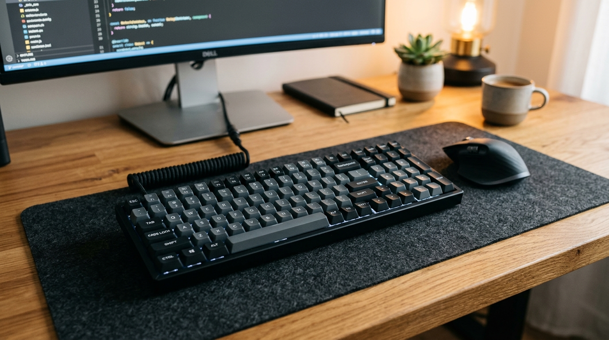

Input Device

Keyboard
The primary alphanumeric data entry peripheral used to feed letters, numbers, punctuation, and shortcut execution commands into an operating system.
Primary Function
Alphanumeric text typing, command line execution, system navigation shortcuts, and gaming inputs.
How It Works
Keys rest above an electrical matrix grid. Pressing a key closes a switch contact; an internal microcontroller detects the row/column coordinates, debounces the signal, and sends binary scan codes to the OS.
Common Form Factors
Mechanical switch keyboards, membrane chiclet laptop keyboards, ergonomic split boards, wireless Bluetooth keyboards.
Key Specifications
N-Key Rollover (NKRO), 1000Hz polling rate, switch actuation distance (1.2mm–2.0mm), USB-C / 2.4GHz wireless.